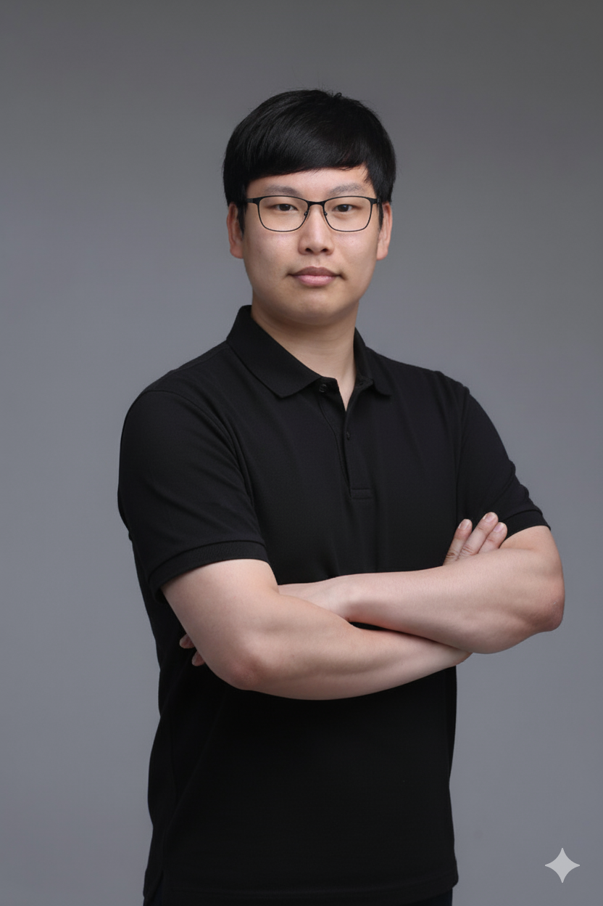

발표 소개
인과 기업이 AI 기술의 주도권을 확보하는 소버린 AI(Sovereign AI)의 개념을 다룹니다. 구체적으로는 AI 에이전트가 직접 답변하고 거래를 수행하는 에이전트 커머스(Agentic Commerce) 시대의 도래와 이로 인한 시장 구조의 변화를 조명합니다. 나아가 개인 데이터의 자율성을 지키면서 거래 및 보상 체계에 참여할 수 있는 Web3 기반의 AI 네트워크 아키텍처와 결제 구조를 주제로 삼고 있습니다. 마지막으로 이러한 기술적 연결을 넘어 공정성과 상호 협력을 가능하게 하는 철학적·사회적 거버넌스와 관계형 AI 비전을 제시하는 내용을 담고 있습니다.
- #web3
- #ai
- #소버린
연사 소개

김민현
커먼컴퓨터 대표
김민현 (커먼컴퓨터 대표 | Web3 AI 랩짱 | AI 미래포럼 의장)
Web3 AI 기업 커먼컴퓨터의 대표이자 자율 AI(Autonomous AI) 전문가다. 구글에서 7년간 소프트웨어 엔지니어로 일한 경험을 바탕으로 'AI를 위한 인터넷'이라는 비전을 실현하기 위해 커먼컴퓨터를 설립했다. 현재는 Web3와 자율 AI 기술 기반의 AI Network솔루션으로 AX 사업을 주도하는 한편, 멘토링 및 강연 활동을 병행하고 있다. 2025년 포브스 코리아 '30대 미만 AI 리더 30인'으로 선정되며 전문성을 인정받았다.